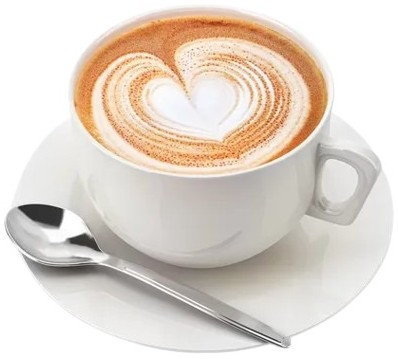
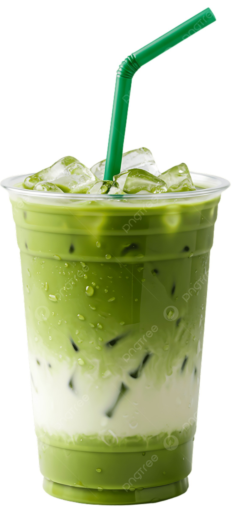
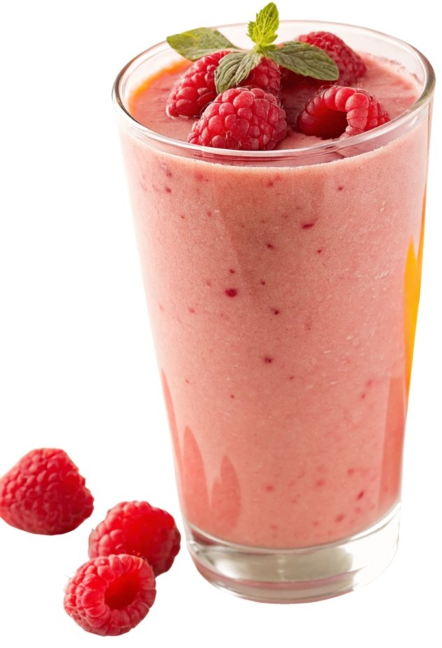
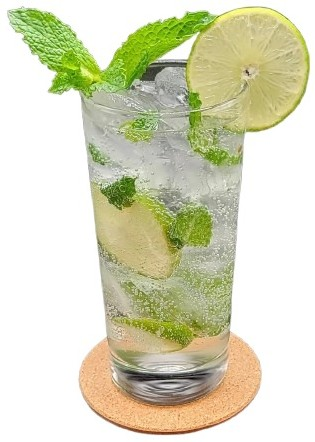
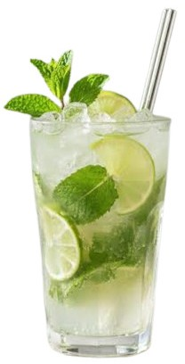

Класичний капучино
Ідеальний баланс еспресо та ніжнішої збитої молочної пінки.

Ідеальний баланс еспресо та ніжнішої збитої молочної пінки.

Японський зелений чай із шовковистим молоком.

Густий вітамінний напій на основі свіжих лісових ягід та банана.

Освіжаючий класичний коктейль з лаймом, м'ятою та содовою.

Домашній освіжаючий лимонад із листям свіжої м'яти.